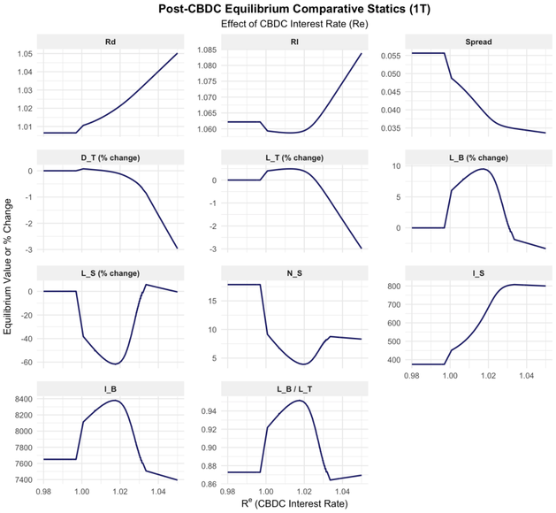

2026 · Manuscript in preparation
CBDC in a Concentrated Banking System
We examine how a central bank digital currency (CBDC) affects bank lending when a few large banks compete with many smaller ones. We compare a CBDC issued directly to households with one distributed through banks.
Read PDF